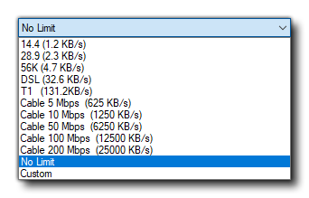

La fonction principale de ces outils est de vous connecter et de servir des fichiers à certaines des plateformes cibles disponibles pour GameMaker Studio 2 (comme la cible HTML5, par exemple). Lorsque vous exécutez un jeu sur une cible nécessitant le serveur Web Micro, une nouvelle fenêtre s’ouvrira au fur et à mesure que le jeu sera diffusé sur le périphérique choisi: 
Le serveur Web affiche un certain nombre d'informations de débogage relatives aux fichiers servis et dispose d'un bouton pour l'effacer en bas. À côté du bouton "Effacer" se trouve le chemin du fichier JS racine du projet, tandis que vous avez en dessous l’option Vitesse du réseau. Ceci est défini sur "No Limit" par défaut, mais cliquer dessus ouvrira une liste de différentes options de réseau: 
La modification de ce paramètre modifiera également l'option Taille du package à droite. Vous pouvez également éditer ceci manuellement, auquel cas la vitesse du réseau sera réglée sur "Personnalisé". Si vous définissez une valeur autre que la valeur maximale, la vitesse de transfert du réseau sera effectivement réduite et les jeux testés dans un environnement à faible bande passante.
Vous pouvez également voir la liste des adresses IP autorisées ainsi que le numéro de port utilisé, mais elles ne peuvent pas être modifiées dans Micro Web Server et doivent être définies à la place dans les paramètres Périphériques du gestionnaire cible pour la cible de périphérique donnée.